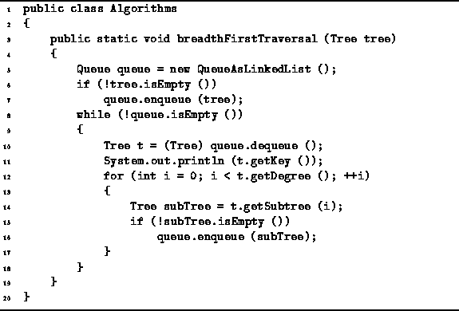

Data Structures and Algorithms
with Object-Oriented Design Patterns in Java
Data Structures and Algorithms
with Object-Oriented Design Patterns in Java
Program  defines
the method breadthFirstTraversal.
This method as its argument
any object that implements the Tree interface.
The idea is that the method is passed the root of the tree to be traversed.
The algorithm makes use of the QueueAsLinkedList data structure,
which was defined in the preceding section,
to hold the appropriate tree nodes.
defines
the method breadthFirstTraversal.
This method as its argument
any object that implements the Tree interface.
The idea is that the method is passed the root of the tree to be traversed.
The algorithm makes use of the QueueAsLinkedList data structure,
which was defined in the preceding section,
to hold the appropriate tree nodes.
The running time of the breadthFirstTraversal algorithm depends on the number of nodes in the tree which is being traversed. Each node of the tree is enqueued exactly once--this requires a constant amount of work. Furthermore, in each iteration of the loop, each node is dequeued exactly once--again a constant amount of work. As a result, the running time of the breadthFirstTraversal algorithm is O(n) where n is the number of nodes in the traversed tree.

Program: Queue application--breadth-first tree traversal.
 Copyright © 1998 by Bruno R. Preiss, P.Eng. All rights reserved.
Copyright © 1998 by Bruno R. Preiss, P.Eng. All rights reserved.